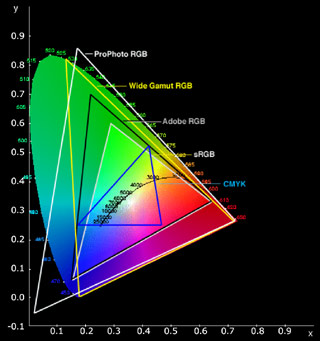
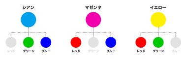
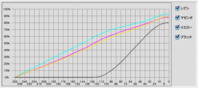

JPEG と ICC プロファイル
JPEG は APP2 チャンクに埋め込んだ ICC プロファイル次第で、同じ RGB値1や CMYK 値でも モニタ(又はプリンタ)に出力する色が変わります。
尚、モニタに表示する色は RGB が基本ですが、プリンタは CMYK (インクの色)です。JPEG の色はその両方に対応していて、ICC プロファイルも両方のタイプが存在します。
RGB 色空間
例えば赤を表す RGB:(255,0,0) 。 世の中に数あるディスプレイが各々全力で鮮やかな赤を表示すると全部色が違ってしまうので、そこそこ鮮やかな赤色に抑える事で実際に表示する色を統一する規格が色々と存在します。
一般に知られる RGB 色空間の ICC プロファイルには以下のようなものがあります。
sRGB, Apple RGB, Adobe RGB, DCI-P3, ProPhoto RGB, scRGB, ...
これらは主に、色域、特性曲線(RGBだとガンマ補正)、が異なってきます。白色点(光源の色に引きずられて白として感じる色は変わる)は D65 が基本です。

( 引用元: http://wiki.nuaj.net/index.php?title=Color_Profile )
又、昔の CRT モニタは入力電圧に対して実際の明るさが比例せず、gamma 2.2 曲線に近い特性があったので、それに合わせたガンマ補正も入ります。
引用元: https://ja.wikipedia.org/wiki/ガンマ値
あえてその逆補正した値を持つ事で、そのまま値を渡すとちょうど線形に戻る。という理屈です。
RGB のデフォルト
Web の世界では sRGB が標準です。
- A Standard Default Color Space for the Internet - sRGB
ICC プロファイルが入っていない JPEG 画像は sRGB として暗黙的に解釈します。(少なくとも Safari では) 2
高演色技術の発達した今の時代に sRGB の色域は物足りない事もありますが、ある意味平和な世界です、CMYK と違って。。
CMYK 色空間
プリンタに出力する色は CMYK で表現します。 Cyan, Magenta, Yellow, blacK 3 で各々インクの量です。
CMYK 色空間の ICC プロファイルは検索すると以下のが見つかります。
Japan Color, US SWOP, FOGRA, ...
(環境によってインクの発色が変わってくるので印刷所ごととか機器ごとにプロファイルを持ってそうですが。。)
RGB と CMYK は大雑把に以下の関係にあります。
(引用元: http://www.iwashi.org/archives/4108 ) 
(引用元: [http://graphicartsunit.tumblr.com/post/post/48824825718/紙デザイナーのためのrgbカラー超入門](http://graphicartsunit.tumblr.com/post/48824825718/%E7%B4%99%E3%83%87%E3%82%B6%E3%82%A4%E3%83%8A%E3%83%BC%E3%81%AE%E3%81%9F%E3%82%81%E3%81%AErgb%E3%82%AB%E3%83%A9%E3%83%BC%E8%B6%85%E5%85%A5%E9%96%80) )
なので、リニア RGB, リニア CMYK というものがあるとすれば、以下の計算式になります。
- ImageMagick: magick/colorspace-private.h
cyan = 1.0 - red;
magenta = 1.0 - green;
yellow = 1.0 - blue;
(一番小さな値を black にしてその分補正)
しかしながら、実際の CMYK はインクの量を表すので、その値に補正する必要があります。以下の図はグレースケールを作るのに必要な CMYK の値だそうです。

(引用元: https://www.jagat.or.jp/past_archives/content/view/3083.html )
“cyan = 1.0 - red” 等で RGB を逆にしただけの CMYK と違って、灰色を作るのに Y, C, M が同量ではありません。また直線でもガンマ曲線でもない曲線になります。
CMYK のデフォルト(?)
RGB における sRGB と違って CMYK には世界的なデファクトがありません。インクの色のノリ具合まで加味されるので温度や湿度といった環境によっても異なりますし、そもそも無理でしょう。
ですので、ICC プロファイルが入っていない CMYK JPEG をモニタやプリンタに出力する時に、どうするかは環境によって異なってきます。
例えば、MacOS の標準ビューアや Safari は、ColorSync の仕組みで色を補正していて、以下の ICC プロファイル4を用いるようです。
/System/Library/ColorSync/Profiles/Generic\ CMYK\ Profile.icc
CMYK JPEG は必ず ICC プロファイルを埋める必要があると言えます。とりあえず日本に限って言えば、Japan Color 2001 Coated を使えば大体 5 は大丈夫でしょう。
Chrome や Firefox など、CMYK のカラープロファイルを解釈しないブラウザだと、インク特性を無視してリニアの CMYK => RGB 処理を行うようで、話が少し面倒だったりします。
参考
- カラーマネージメントとプロファイル変換
- まだCMYKで消耗してるの？〜大幅な色補正をCMYKで行ってはいけない理由〜
- 紙デザイナーのためのrgbカラー超入門
-
JPEG は RGB 値をYCbCrに変換して保存します ↩︎
-
最近の FireFox のデフォルト設定だと、ICC プロファイルが入っていないと何も補正しないそうです。そのままディスプレイのプロファイルで解釈されます。辛い。。 ↩︎
-
blacK の K という説より、Key の略という方が多勢のようです。 ↩︎
-
この Generic CMYK Profile は Japan Color 2001 corted , US Sheetred Coated , FOGRA39 のいずれとも一致しませんでした。無難なプロファイルに見えます。 ↩︎
-
Japan Color 2001 Coated はマット紙用プロファイルで、オフ輪だと japan Web Coated の方が良いそうです。参考) https://www.jagat.or.jp/past_archives/content/view/3083.html ↩︎